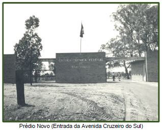
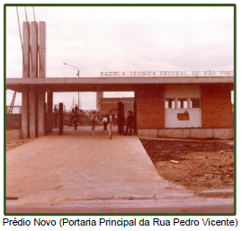
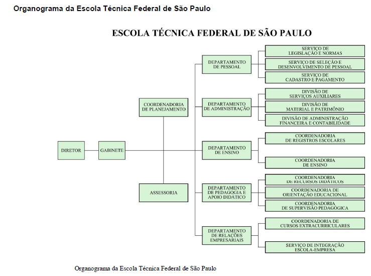
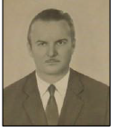
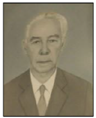
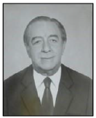
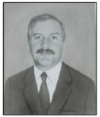
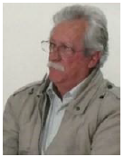

A expressão "Federal" foi incorporada pela primeira vez, esclarecendo sua vinculação direta à União, conforme estipulado pela Lei nº. 4759, de 20 de agosto de 1965. Essa designação englobava todas as escolas técnicas e instituições de nível superior do sistema federal. O artigo primeiro da lei estabeleceu que as universidades e escolas técnicas da União, vinculadas ao Ministério da Educação e Cultura e localizadas nas capitais dos Estados, seriam qualificadas como federais e teriam a denominação do respectivo Estado.
Em 1970, foi iniciada a construção de uma nova sede para a escola, mas somente em 1976 uma parte da obra foi entregue, fazendo com que a Escola Técnica Federal passasse a operar nas áreas parcialmente construídas.
 Assim, a mudança para o Bairro do Canindé, na Rua Pedro Vicente, ocorreu quando a instituição atendia pelo nome de "Escola Técnica Federal de São Paulo". Esse movimento permitiu uma ampliação significativa dos cursos oferecidos, incluindo Eletrotécnica (1965), Eletrônica e Telecomunicações (1977) e Processamento de Dados (1978), adicionados aos cursos já existentes de Edificações e Mecânica. Em 1971, por meio de um acordo entre a União e o Banco Internacional de Reconstrução e Desenvolvimento (BIRD), a escola paulista recebeu máquinas e equipamentos para estabelecer um Centro de Engenharia de Operação, embora esse projeto não tenha sido autorizado. O reconhecimento e destaque da Escola Técnica Federal de São Paulo ocorreram com a criação dos cursos técnicos integrados pela Lei nº. 5692/71, conhecida como a Lei de Diretrizes e Bases do Ensino de 1º e 2º grau. Essa legislação também introduziu a profissionalização universal e compulsória do ensino médio, especializado nas ocupações do mercado, representando o coroamento da fusão dos ramos secundário e profissional do ensino médio. Na década de 70, houve uma valorização do ensino profissionalizante no contexto econômico brasileiro, equiparando o trabalho do técnico ao ensino superior. Em 1981, mudanças foram implementadas na Escola Técnica Federal de São Paulo pelo Decreto nº. 85.843, de 25 de março, que resultou na extensão do mandato do professor Theofilo Carnier como Diretor Executivo por dez anos além do previsto pela norma anterior, até 1986.
Em 1979, a escola operava no subsolo, com o saguão parcialmente coberto e uma grande porção da laje completamente descoberta e desprotegida. O saguão principal, o primeiro pavimento e parte das oficinas não haviam sido concluídos. As aulas do curso de Edificações eram realizadas no subsolo, enquanto as disciplinas de canteiro de obras ocorriam em áreas externas à edificação. Alguns laboratórios, no entanto, já estavam operando adequadamente, com todos os equipamentos necessários.
Em 1986, a instituição realizou suas primeiras eleições para escolher o diretor, e o professor Antônio Soares Cervila foi eleito com 130 votos. Esse período coincidiu com reformas significativas no ensino profissionalizante de segundo grau, destacando-se a substituição do termo "qualificação" por "preparação" no objetivo geral do ensino. Isso refletiu a concepção de desenvolvimento socioeconômico dos anos 50 e 60, direcionando os investimentos do Estado para uma maior adequação entre as demandas ocupacionais e o sistema educacional. Durante a gestão de Cervila, a Escola Técnica Federal de São Paulo iniciou a expansão de unidades descentralizadas em 1987, com a criação da unidade em Cubatão, a primeira no país. Em 1996, durante a gestão de Francisco Gayego Filho, foi estabelecida uma segunda unidade em Sertãozinho, oferecendo cursos preparatórios à comunidade, além do curso Técnico em Mecânica integrado ao Ensino Médio.
Antonio André Mendonça de Queirós Telles (ag/1964 a dez/1965)
Moacir Benvenutti (dez/1965 a dez/1969)
Miguel Bianco (jan/1969 a fev/1970)
Theóphilo Carnier (abr/1974 a ago/1986)
Antonio Soares Cervilla (ago/1986 a ago/1994)
Francisco Gayego Filho (ago/1994 a jan/1999)